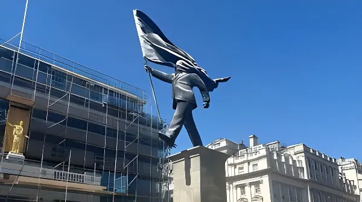

Dans la nuit du 28 au 29 avril 2026, une statue monumentale apparaît à Waterloo Place, en plein cœur de Londres. Elle représente un homme en costume marchant au bord d'un piédestal, le visage entièrement masqué par un drapeau qu'il tient lui-même. Le 30 avril, Banksy revendique l'œuvre sur Instagram. Installée à quelques centaines de mètres de Downing Street, parmi les monuments impériaux et militaires du XIXe siècle, la statue s'impose comme une charge frontale contre le nationalisme aveugle — et relance le débat sur l'identité de son auteur.
Banksy est un artiste urbain britannique actif depuis le début des années 1990, dont la véritable identité est restée inconnue pendant plus de trois décennies. Originaire de Bristol, il a développé un style reconnaissable entre tous, fondé sur la technique du pochoir et sur un mélange caractéristique d'humour, de subversion politique et de provocation institutionnelle. Ses cibles de prédilection sont l'armée, le capitalisme, la surveillance de masse, la politique migratoire et les symboles du pouvoir.
Actif d'abord dans la scène underground bristolienne — influencée par le mouvement trip hop et les collectifs de graffeurs comme le DryBreadZ Crew — Banksy s'installe à Londres vers 2000 et commence à y déposer ses œuvres dans l'espace public. Dès 2003, il attire l'attention des médias mainstream. En 2005, il peint sur le mur de séparation israélo-palestinien à Bethléem ; en 2013, il organise une « résidence » d'un mois à New York ; en 2018, son tableau Girl with Balloon se détruit lui-même aux enchères chez Sotheby's. En 2022, il signe une série de fresques dans les zones bombardées de l'Ukraine. Chacune de ces actions amplifie sa légende et interroge les frontières entre art, performance et activisme.
La statue représente un homme en costume — vraisemblablement un homme politique — tenant un mât de drapeau dont le tissu retombe en avant et lui recouvre entièrement le visage, l'aveuglant littéralement. La figure avance d'un pas assuré, mais se dirige vers le vide : elle est positionnée à mi-chemin de son piédestal, en équilibre précaire au bord du vide. La couleur de l'ensemble — socle en granit et silhouette en bronze — mime avec soin les monuments qui l'entourent, s'intégrant avec une ironie calculée dans le paysage statuaire existant.
L'emplacement est loin d'être anodin. Waterloo Place, juste en haut des marches de l'ICA sur le Mall, accueille déjà les statues du roi Édouard VII, de Florence Nightingale, du capitaine Scott de l'Antarctique et du mémorial de la guerre de Crimée. En s'insérant dans cet espace dédié aux gloires impériales et militaires britanniques, la statue de Banksy constitue un geste de subversion direct : le personnage anonyme en costume devient une figure générique du pouvoir aveuglé, placée en dialogue forcé avec les héros nationaux officiels.
Dans la nuit, des ouvriers à l'aide d'une grue installent discrètement la statue à Waterloo Place. Les premiers passants la remarquent à l'aube du 29 avril.
Les réseaux sociaux s'enflamment. La signature de Banksy est visible sur le socle, mais sans publication officielle sur son Instagram, le doute subsiste. Les médias parlent d'une probable œuvre de l'artiste.
Banksy confirme l'œuvre sur son compte Instagram (13,8 millions d'abonnés) avec une vidéo humoristique de l'installation nocturne par grue. La revendication est immédiate et sans ambiguïté.
Westminster City Council fait installer des barrières autour de la statue pour la protéger, tout en annonçant qu'elle reste accessible au public. La Mairie salue « une contribution frappante à la scène artistique de la ville ».
Les grandes rédactions internationales — CNN, BBC, The Art Newspaper, Euronews — publient leurs analyses. La statue fait la une dans le monde entier.
Le message de la statue est d'une lisibilité immédiate, caractéristique du style de Banksy. L'homme en costume — la tenue du politique ou du dirigeant — avance sans voir, littéralement aveuglé par le drapeau qu'il porte lui-même. Le tissu du drapeau ne porte aucun signe distinctif, aucune nationalité : il est universel, rendant la figure applicable à n'importe quel régime politique qui instrumentalise le sentiment national. Un utilisateur Instagram le formule ainsi : « Le drapeau n'a pas d'identité — aucun pays, aucune allégeance — juste une forme, rendant la figure universelle… et pourtant encore indéniablement dirigée. »
Le contexte britannique renforce la lecture. Installée à 450 mètres de Downing Street, dans un quartier saturé de références à la grandeur impériale, la statue s'inscrit dans un moment de questionnement identitaire profond au Royaume-Uni : les séquelles du Brexit, la montée des tensions autour de la question écossaise et galloise, les débats sur le rôle de la monarchie. La proximité géographique avec les institutions du pouvoir — et avec les statues de figures historiques — amplifie la dimension satirique de l'œuvre.
La réaction du Westminster City Council a surpris par sa bienveillance. Loin de chercher à retirer l'œuvre, la mairie a fait poser des barrières de protection et a déclaré dans un communiqué transmis à la BBC : « Nous sommes ravis de voir la dernière sculpture de Banksy à Westminster, qui constitue un ajout saisissant à la scène artistique publique vivante de la ville. Pour l'heure, elle restera accessible pour que le public puisse la voir et en profiter. » Cette posture tranche avec les précédents — nombre de fresques de Banksy ont été effacées ou recouvertes par des autorités locales moins accommodantes.
Sur Instagram, les réactions du public ont été largement positives. Plusieurs commentateurs ont salué « une déclaration puissante sur la cécité collective — avancer sans vision, sans préparation ». Une minorité, incarnée dans la vidéo de Banksy lui-même par un homme âgé déclarant « Je n'aime pas ça », a exprimé son désaccord. Ce contraste délibéré entre l'accueil populaire et le rejet instinctif fait partie intégrante de la mise en scène de l'artiste.
| Monuments voisins | Personnage représenté | Époque |
|---|---|---|
| Colonne du duc d'York | Prince Frédéric, duc d'York | 1834 |
| Statue d'Édouard VII | Roi Édouard VII | 1921 |
| Florence Nightingale | Infirmière de la guerre de Crimée | 1915 |
| Mémorial de Crimée | Soldats de la Guards Brigade | 1861 |
| Statue Banksy | Homme anonyme au drapeau | 2026 |
« Travailler sous un pseudonyme permet aux créateurs de dire la vérité au pouvoir sans craindre les représailles, la censure ou la persécution. »
— Mark Stephens, avocat de Banksy, cité lors de l'enquête Reuters sur l'identité de l'artiste, mars 2026Cette statue s'inscrit dans un contexte particulièrement sensible quant à l'anonymat de l'artiste. En mars 2026, l'agence Reuters avait publié une vaste enquête affirmant avoir identifié Banksy avec une certitude « hors de tout doute raisonnable » : il s'agirait de Robin Gunningham, 51 ans, natif de Bristol, qui aurait ensuite changé son nom en David Jones. Cette révélation s'appuyait sur un voyage en Ukraine en 2022, des photographies de proches et une note manuscrite lors d'une arrestation à New York en 2000.
L'entourage de Banksy a rejeté ces conclusions. Son avocat Mark Stephens a déclaré que l'artiste « n'accepte pas de nombreux détails » de l'enquête, sans apporter de démenti explicite. Le collectif officiel de l'artiste a refusé de commenter. En revendiquant cette nouvelle statue au moment précis où la presse mondiale débat de son identité, Banksy semble jouer délibérément avec sa propre mythologie — réaffirmant la primauté de l'œuvre sur la personne.
Au-delà du coup d'éclat médiatique, la statue de Banksy à Waterloo Place cristallise les tensions qui traversent le Royaume-Uni en 2026 : le retour des débats sur l'identité nationale après le Brexit, la fragilité des institutions symboliques face à la satire contemporaine, et la capacité persistante de l'art de rue à occuper l'espace public sans permission. En s'imposant durablement dans un des hauts lieux de la mémoire impériale britannique, cette statue anonyme en costume — sans pays, sans visage, aveuglée par son propre drapeau — pose une question qui dépasse largement les frontières du Royaume-Uni.
In the early hours of 29 April 2026, a monumental statue appeared in Waterloo Place in the heart of London. It depicts a suited man walking to the edge of a plinth, his face entirely obscured by a flag he himself is carrying. On 30 April, Banksy claimed the work on Instagram. Installed just a few hundred metres from Downing Street, among the imperial and military monuments of the 19th century, the statue stands as a direct charge against blind nationalism — and reignites the debate about its author's identity.
Banksy is a British urban artist active since the early 1990s, whose true identity remained unknown for more than three decades. Originally from Bristol, he developed an instantly recognisable style built on stencil technique and a characteristic blend of humour, political subversion and institutional provocation. His preferred targets include the military, capitalism, mass surveillance, immigration policy and the symbols of power.
First active within Bristol's underground scene — shaped by the trip hop movement and graffiti collectives such as the DryBreadZ Crew — Banksy moved to London around 2000 and began placing works in public spaces across the capital. By 2003, mainstream media were paying close attention. In 2005, he painted on the Israeli West Bank barrier in Bethlehem; in 2013, he staged a month-long "residency" in New York; in 2018, his painting Girl with Balloon self-destructed at auction at Sotheby's. In 2022, he created a series of murals in the bombed-out zones of Ukraine. Each of these actions deepened his legend and challenged the boundaries between art, performance and activism.
The statue depicts a suited man — presumably a politician — holding a flagpole whose fabric falls forward and completely covers his face, literally blinding him. The figure strides forward confidently yet is heading towards the void: positioned halfway off its plinth, in precarious balance at the edge. The colouration of the piece — granite plinth and bronze figure — carefully mimics the surrounding monuments, slotting into the existing statuary landscape with calculated irony.
The location is far from incidental. Waterloo Place, just up the steps from the ICA on The Mall, already hosts statues of King Edward VII, Florence Nightingale, Captain Scott of the Antarctic, and the Crimean War Memorial. By inserting itself into this space dedicated to British imperial and military glory, Banksy's statue constitutes a direct act of subversion: the anonymous suited figure becomes a generic embodiment of power blinded by its own symbols, placed in forced dialogue with the nation's official heroes.
Under cover of night, workers using a crane quietly install the statue at Waterloo Place. The first passers-by notice it at dawn on 29 April.
Social media erupts. Banksy's signature is visible on the plinth, but without an official Instagram post, doubt lingers. Media outlets report it as a likely Banksy work.
Banksy confirms the work on his Instagram account (13.8 million followers) with a humorous video of the nocturnal crane installation. The claim is immediate and unambiguous.
Westminster City Council erects barriers around the statue to protect it, announcing it will remain accessible to the public. The council welcomes "a striking addition to the city's vibrant public art scene."
Major international outlets — CNN, BBC, The Art Newspaper, Euronews — publish their analyses. The statue makes front pages worldwide.
The statue's message is immediately legible, characteristic of Banksy's style. The suited man — in the uniform of the politician or executive — strides forward unseeing, literally blinded by the flag he himself carries. The flag's fabric bears no distinguishing mark, no nationality: it is universal, making the figure applicable to any political regime that weaponises national sentiment. One Instagram commenter captured it well: "The flag carries no identity — no country, no allegiance — just a form, making the figure universal… and somehow still unmistakably directed."
The British context sharpens the reading. Installed 450 metres from Downing Street, in a district saturated with references to imperial greatness, the statue arrives at a moment of deep identity questioning in the United Kingdom: the lingering fallout from Brexit, rising tensions around Scottish and Welsh devolution, and ongoing debates over the role of the monarchy. The geographical proximity to the institutions of power — and to statues of historical figures — amplifies the work's satirical dimension.
Westminster City Council's reaction surprised many with its benevolence. Rather than seeking to remove the work, the council had protective barriers installed and stated in a communiqué relayed by the BBC: "We're excited to see Banksy's latest sculpture in Westminster, making a striking addition to the city's vibrant public art scene. While we have taken initial steps to protect the statue, at this time it will remain accessible for the public to view and enjoy." This stance contrasts with past precedents — many Banksy murals have been erased or covered over by less accommodating local authorities.
On Instagram, public reaction was overwhelmingly positive. Several commenters praised "a compelling statement on collective blindness — forward motion without vision, without preparation." A minority, embodied in Banksy's own video by an elderly man declaring "I don't like it," expressed their disagreement. This deliberate contrast between popular reception and instinctive rejection is itself part of the artist's mise en scène.
| Neighbouring monuments | Figure represented | Era |
|---|---|---|
| Duke of York Column | Prince Frederick, Duke of York | 1834 |
| Edward VII statue | King Edward VII | 1921 |
| Florence Nightingale | Nurse of the Crimean War | 1915 |
| Crimean War Memorial | Guards Brigade soldiers | 1861 |
| Banksy statue | Anonymous suited man with flag | 2026 |
"Working under a pseudonym allows creators to speak truth to power without fear of retaliation, censorship or persecution."
— Mark Stephens, Banksy's lawyer, quoted during the Reuters identity investigation, March 2026This statue arrives in a particularly sensitive context regarding the artist's anonymity. In March 2026, Reuters published a major investigation claiming to have identified Banksy "beyond reasonable doubt": the artist is allegedly Robin Gunningham, 51, from Bristol, who later changed his name to the more common David Jones. The investigation drew on a trip to Ukraine in 2022, photographs from former associates, and a handwritten confession note from a New York arrest in 2000.
Banksy's entourage rejected these conclusions. His lawyer Mark Stephens stated that the artist "does not accept many of the details" in the investigation, without issuing an explicit denial. The artist's official organisation declined to comment. By claiming this new statue at the very moment the world's press is debating his identity, Banksy appears to be deliberately playing with his own mythology — reasserting the primacy of the work over the person.
Beyond the media spectacle, Banksy's statue at Waterloo Place crystallises the tensions running through the United Kingdom in 2026: the return of national identity debates in the post-Brexit era, the fragility of symbolic institutions in the face of contemporary satire, and the persistent capacity of street art to occupy public space without permission. By imposing itself durably in one of the great sites of British imperial memory, this anonymous suited figure — without a country, without a face, blinded by its own flag — poses a question that extends far beyond the borders of the United Kingdom.